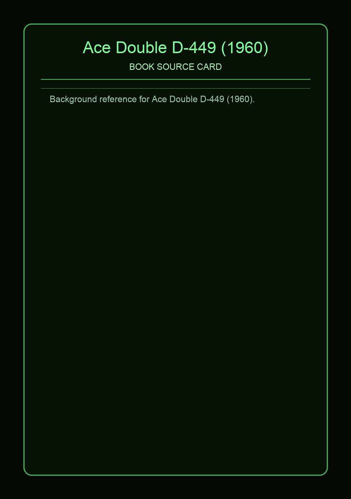

Ace Double D-449 (1960)
Source Card

This page provides an original overview of Ace Double D-449 (1960) as a book inspiration source for the default DnDex card set. For factual detail, use the attributed reference links on this page.
Covers and References


Context note: Ace Double D-449 (1960) helps shape default character, monster, or location flavor in the game. This summary text is project-written and not copied from external source prose.
External Links
This page now links directly to bibliography sources and representative cover art for this Ace Double code.